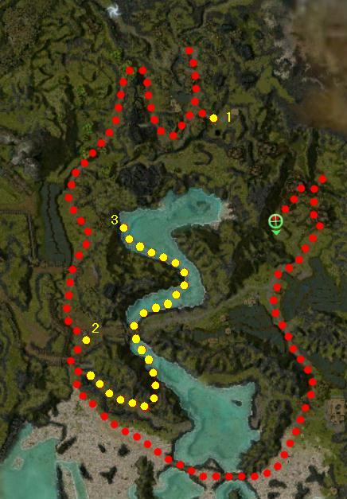

Elite: None / not listed
M7
Gates of Kryta
◉ Mission Map

Click to enlarge · Local cache · Wiki
Summary (click to expand)
Prince Rurik has died, and it is now up to the player to get the survivors to a new home in Kryta . Unfortunately, doing so will require the player to aid in defeating an invasion of the undead .
Region: Kryta · Mission: 7 of 25 · Type: Cooperative
✓ Objectives
Secure a safe place for your people to settle.
- Make contact with the local authorities at Lion's Arch.
- Head south across the beach to find Justiciar Hablion.
- Help Justiciar Hablion clear the swamp of undead.
- *BONUS* Retrieve the Orrian text and have it translated.
→ Walkthrough
Head south until you reach the village (point 2). To open the gate, you must defeat all the undead in the open area along the route. Once inside, speak to Justiciar Toriimo to open the southern exit from the village and head over the bridge at the beach.
Follow the shore to the east and talk to Justiciar Hablion to trigger the first cinematic. Immediately afterwards, the White Mantle will rush forward to fight the undead. Players must ensure Hablion's survival or the mission will fail. After a while Hablion splits from the White Mantle troops, but the player must follow the group and keep killing the undead. Once all foes have been cleared, the second/final cinematic will trigger.
To increase the chance of success in keeping Hablion alive, you can simply not talk to him since you can complete the mission without him. While at it, if your party nearly wipes except for one player, that single survivor can return to Hablion; talking to him will trigger the first cinematic and result in your party's entire resurrection (at his location) which grants a second chance with the White Mantle reinforcements.
Alternatively you can take the "backway" in and finish the mission without triggering the cinematic and without risking Hablion getting killed. Coming back from retrieving the bonus Text and before leaving the beach (to the right), send one person back to collect bonus and the others stay left a little ways up the beach and then exit and up the ramp on the left. Join the main path and continue north and finish the mission.
★ Bonus
Talk to the pig named Oink (point 1) to get it to follow you; lead it back to Cheswick (the owner) (point 2). Follow the water north from the beach until you find a chest (point 3) that contains the Orrian Text. Picking up the book will popup several Smoke Phantoms: these should only present a problem for lower-level parties. Along the way, you will encounter several more trigger points; again, fight rather than run. You get credit for the bonus when you return the text to the Orrian Historian McClain (point 2).
Alternatively, you can go straight to the chest (point 3) after getting Oink to follow you, bypassing both McClain and Cheswick. Oink will tank your enemies, allowing you to easily defeat them (the pig's damage output is next to nothing, but it is invincible to your enemies). (You could retrieve the book without Oink, but (a) he must be with you to get credit for the bonus and (b) you would lose his help along the way.)
◆ Hard Mode
The White Mantle NPCs will die very quickly, so it is wiser to run ahead of them and clear a path to ensure Justiciar Hablion's survival.
☠ Bosses & Elites
Elite: None / not listed
Elite: None / not listed
Elite: None / not listed
Elite: None / not listed
Elite: None / not listed
✦ Tips & Notes
Skill recommendations
- Phantoms and skeletons are not fleshy, so they don't leave exploitable corpses and are immune to bleeding, disease, and poison.
- Most foes are undead and take double damage from Holy damage skills.
 Heart of Holy Flame and
Heart of Holy Flame and  Judge's Insight can make attacks deal holy damage.
Judge's Insight can make attacks deal holy damage.
Hard mode
- Condition removal and hex removal skills, to counter Skeleton Mesmer's Ineptitude and Fragility.
Notes
- After completing this mission, your party will be taken to Lion's Arch.
- Though it is implied, it is not explicitly stated that the mission is failed if Justiciar Hablion dies.
- If you are having trouble keeping Hablion alive, you can bypass his dialogue and avoid activating him; travel via the water up the other side.
- Complete exploration of this mission contributes approximately 1.4% to the Tyrian Cartographer title.
- Players looking for the cartographer title can find a hidden path behind the house where Oink is found.
- Completion of this mission in Hard Mode will fill in page #8 of the Young Heroes of Tyria storybook.